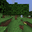

Chapitre 7
La curiosité en panne, puis deux rustines qui marchent à moitié
Prérequis : Chapitres 1 à 6 — jusqu'au mur du premier arbre trouvé en solo, que ce chapitre attaque pour la première fois.

Piste débutant
Le problème qu'on attaque : trouver le premier arbre, seul
Le Chapitre 6 s'est terminé sur un mur bien identifié : l'agent sait fabriquer des planches à la
perfection une fois qu'il a du bois, mais dans un vrai monde de survie généré au hasard, il ne
trouve jamais son premier arbre — 0 bûche sur 5 épisodes testés. Ce chapitre raconte la
première grande campagne pour attaquer ce mur. Spoiler honnête, comme toujours dans ce projet :
la première idée échoue proprement, et les corrections suivantes n'apportent qu'un progrès
partiel — mais chaque échec révèle quelque chose de précis sur la nature réelle du problème.
Idée n°1 : la curiosité — récompenser l'agent pour ce qui le surprend
L'idée s'appelle la curiosité artificielle. Le principe : au lieu de ne récompenser l'agent
que pour atteindre un objectif, on lui donne aussi une petite récompense chaque fois qu'il va vers
quelque chose de surprenant — un endroit que son modèle du monde connaît mal, où ses
prédictions se trompent beaucoup. L'intuition : si l'agent ne trouve jamais d'arbre parce qu'il ne
sait pas dans quelle direction chercher, le pousser vers ce qui le surprend devrait naturellement
le faire explorer plutôt que rester planté.
Concrètement, le projet a construit un petit comité de 5 « devineurs » qui essaient chacun de
prédire ce qui va se passer ensuite dans l'embedding (le résumé en nombres de l'image, Chapitre
1). Quand les 5 devineurs sont d'accord, c'est un endroit familier — rien de surprenant. Quand ils
sont en désaccord, c'est un endroit mal compris — potentiellement intéressant à explorer. Cette
idée s'appelle Plan2Explore et vient d'un vrai article de recherche.
Avant de lancer cette expérience (et toutes celles qui suivent dans ce chapitre et le suivant), le
projet a construit une petite équipe de trois agents logiciels spécialisés — un qui propose une
expérience à partir de vraies références scientifiques, un qui l'implémente sans jamais abîmer ce
qui fonctionne déjà, un qui la teste honnêtement et rapporte les vrais chiffres. Cette discipline
sert à éviter de se raconter des histoires sur ses propres résultats.
Le résultat : aucune différence, et plus lent
Comparaison sur 20 épisodes de Treechop (le mode « juste couper un arbre » du Chapitre 5), avec et
sans la curiosité activée : sans curiosité, 30% de réussite ; avec curiosité, 25% — une
différence bien trop petite pour être fiable avec seulement 20 épisodes de chaque côté, et surtout,
avec la curiosité, le jeu tourne deux fois et demi plus lentement (le comité de 5 devineurs
doit juger chacune des 512 histoires imaginées à chaque instant, Chapitre 4). Verdict honnête :
la curiosité n'a rien apporté, et elle a coûté cher en vitesse.
Pourquoi ça a échoué : le comité s'est mis d'accord trop vite
En regardant l'entraînement du comité de devineurs, l'explication apparaît clairement : dès la
troisième passe d'entraînement, les 5 devineurs se sont tous mis d'accord entre eux, et sont
restés d'accord pour le reste de l'entraînement. Un comité toujours d'accord ne peut plus jamais
signaler « ceci est surprenant » nulle part — le signal de curiosité est resté plat partout, ce qui
explique exactement pourquoi activer la curiosité n'a rien changé (à part ralentir le jeu).
La vraie cause, plus intéressante que le symptôme : la vraie méthode Plan2Explore entraîne son
comité de devineurs en continu, sur ce que l'agent découvre en explorant lui-même — un flux de
données forcément varié, puisque l'agent va sans arrêt vers des endroits nouveaux. Ce projet, lui,
a entraîné le comité une fois pour toutes, sur des enregistrements figés de parties d'experts qui
coupent toujours le même arbre de la même façon. Sur des données aussi répétitives, les 5
devineurs trouvent tous la même solution simple, et n'ont plus jamais de raison d'être en
désaccord. Le projet a reproduit la forme de la méthode sans reproduire la condition qui la
fait marcher.
Idée n°2 : arrêter de regarder par le prisme de la curiosité
Après cet échec, le projet a pris du recul et reposé la question autrement : qu'est-ce que le
planificateur (Chapitre 4) fait réellement, mécaniquement, quand aucun arbre n'est visible ?
Deux défauts très concrets sont apparus — aucun des deux n'a besoin d'apprentissage pour être
corrigé.
Défaut 1 : le planificateur ne peut même pas imaginer le bon geste. Pour chercher un arbre
invisible, le bon geste, c'est « tourner la caméra dans une direction pendant plusieurs instants
de suite ». Mais le planificateur tire ses 512 histoires imaginées en choisissant, à chaque
instant, une action complètement indépendante de la précédente — un peu comme lancer un dé à 17
faces 12 fois de suite sans mémoire. La probabilité qu'un tel tirage produise 6 fois d'affilée
l'action « tourner » est quasiment nulle. Le problème n'est pas que le planificateur choisit
mal — c'est que le bon geste n'existe même pas dans la liste de choses qu'il envisage.
La correction s'appelle l'échantillonnage collant : à chaque instant imaginé, au lieu de tirer
une action complètement neuve, on répète l'action précédente avec une certaine probabilité. Cette
seule règle fait grimper le taux de répétition consécutive de 7% (tirage indépendant) à 72%
(collant à 70%) — les 512 histoires imaginées contiennent désormais des gestes tenus dans le temps
(tourner-et-regarder, marcher-vers, frapper de façon soutenue).
Défaut 2 : l'agent ne sait même pas qu'il est perdu. Quand un arbre est visible, les 512
histoires imaginées obtiennent des scores très différents (certaines s'en approchent, d'autres
s'en éloignent). Quand rien n'est visible, les 512 scores sont quasiment identiques — le choix
final devient un tirage au sort déguisé. Cet écart entre les scores (leur écart-type) est un
signal gratuit, déjà calculé, jamais utilisé jusque-là : élevé, ça veut dire « je vois quelque
chose d'utile » ; proche de zéro, ça veut dire « je suis perdu ». Une petite règle a été ajoutée :
après plusieurs tours de suite avec ce signal proche de zéro, l'agent abandonne temporairement le
planificateur et tourne la caméra méthodiquement jusqu'à ce que le signal remonte (un arbre est
entré dans le champ de vision) ou qu'un budget de tours soit épuisé.
À prendre pour ce que c'est : ce n'est pas de l'apprentissage. C'est un réflexe écrit à la
main — le genre de chose que des méthodes plus lourdes (hors de portée d'un seul GPU grand public)
apprennent d'elles-mêmes. Mais ça n'a pas de sens d'apprendre à un agent à explorer tant qu'il ne
peut même pas tourner la tête correctement.
Les résultats : un vrai progrès sur Treechop, zéro sur le cold-start
Sur Treechop (l'agent démarre toujours en forêt), la combinaison collant+réflexe donne un résultat
nuancé : à un réglage modéré (collant à 50%), le taux de succès reste dans la fourchette normale
déjà observée au Chapitre 5, mais chaque succès rapporte environ deux fois plus de récompense — le
collant aide à creuser (continuer à couper un arbre déjà trouvé) plus qu'à chercher (trouver
plus d'arbres). À un réglage plus fort (collant à 70%), l'agent se bloque trop sur un seul geste et
le résultat empire légèrement.
Sur le vrai cold-start (spawn aléatoire, sans bois de départ) : zéro bûche coupée, dans toutes
les configurations testées. Pire, à un certain réglage du seuil, le réflexe « tourner la tête »
devient pathologique : l'agent tourne la caméra 82 à 92% du temps, littéralement en train de
tourner sur lui-même sans jamais s'arrêter. L'observation la plus révélatrice : dans certains
épisodes, l'agent se retrouve entouré d'arbres et ne les coupe toujours pas. Ce n'est donc pas
(seulement) un problème de recherche — c'est un problème d'approche et de coupe une fois la cible
trouvée.
Une variante testée pour comprendre : donner à l'agent deux « cerveaux » séparés — celui qui a fait
ses preuves sur Treechop pilote la recherche de l'arbre, le nouveau modèle prend le relais dès la
première bûche pour fabriquer. Résultat : toujours zéro bûche, mais le comportement change
nettement (des gestes de bûcheron reconnaissables au lieu d'un vagabondage confus). Un des épisodes
montre l'agent qui apparaît dans un ravin rocheux sans un seul arbre, et qui frappe la pierre à la
place — un rappel qu'un point de spawn sans bois du tout ne peut être résolu par aucun réflexe de
recherche.
Une dernière tentative avant de conclure : affiner le modèle sur plus de diversité
Dernière piste testée dans cette campagne : si le signal « je suis perdu » est flou sur le modèle
de fabrication (contrairement au modèle Treechop où il est net), c'est peut-être parce que les
démonstrations d'experts utilisées pour l'entraîner montrent rarement des moments où l'expert est
« perdu » — les experts trouvent du bois vite, ils ne traînent jamais dans le vide. En ajoutant
une vingtaine de courtes parties jouées au hasard (donc, statistiquement, souvent perdues) au jeu
de données d'entraînement, puis en réentraînant légèrement le modèle sur ce mélange, le signal
« perdu vs. trouvé » devient effectivement beaucoup plus net qu'avant.
Mais le résultat final ne change pas d'un iota : toujours zéro bûche coupée, avec ou sans cet
affinement. Rendre le signal plus net n'a pas rendu le comportement meilleur. Cette découverte
confirme ce que l'expérience des deux cerveaux avait déjà suggéré : le mur n'est pas dans la
perception (savoir qu'on est perdu), il est dans le comportement (savoir quoi faire une fois
qu'on a trouvé quelque chose, ou comment couvrir du terrain quand on ne trouve rien). Le chapitre
suivant continue cette enquête avec des outils encore plus directs.
Piste expert
Cadrage : d'une hypothèse d'exploration à un diagnostic mécanique
Le symptôme de départ (0 log sur ObtainIronPickaxeDense, 5 épisodes, docs/08_crafting.md) a
d'abord été traité comme un problème d'exploration/récompense intrinsèque, puis re-diagnostiqué
comme un défaut d'implémentation du MPC lui-même — deux lectures du même symptôme, testées dans
l'ordre.
Harness : une boucle de développement à 3 agents
Avant toute expérience : jepa-explorer (lecture seule, propose une expérience ancrée sur
docs/references/index.md §3), jepa-developer (implémente, config-gated, ne touche jamais un
checkpoint qui marche, seedé), jepa-tester (exécute les gates + play, rapporte PASS/FAIL avec
les vrais chiffres, honnête sur la variance), orchestrés par /jepa-loop.
Proposition #1 — Plan2Explore, novelty offline
Idée (Sekar et al., arXiv:2005.05960, ICML 2020) : ajouter
un bonus intrinsèque score = goalscore + λ · noveltyscore, novelty_score = désaccord d'un
ensemble de k=5 têtes de prédiction one-step conditionnées par l'action, sur le latent spatial
[D,8,8].
Implémentation : mine_jepa/ebwm/curiosity.py::DisagreementEnsemble ;
scripts/train_curiosity.py entraîne sur des latents eb-JEPA figés, optimiseur séparé, seedé,
sauvegarde vers checkpoints/curiosity_ensemble.pt, ne touche jamais ebwm.pt ;
DiscreteLatentPlanner blend la novelty z-scorée quand novelty_coeff > 0 (0.0 par défaut =
comportement original bit-for-bit).
Résultat, A/B sur MineRLTreechop-v0, N=20, même ebwm.pt (ratio 0,927) :
| Condition | Succès | Reward moyen | Logs | fps |
|---|---|---|---|---|
| OFF (goal-centroid seul) | 6/20 = 30% | 0,40 | 8 | 63 |
| ON (novelty λ=1,0) | 5/20 = 25% | 0,25 | 5 | 25 |
Écart non significatif à N=20 (variance documentée 25-50% de Treechop) ; coût 2,5× le fps
(l'ensemble tourne sur les 512 candidats à chaque replan). Verdict : FAIL.
Cause racine : collapse de l'ensemble pendant l'entraînement
epoch 1: val_disagree = 0,0613 (diversité saine)
epoch 2: val_disagree = 0,0122
epoch 3: val_disagree = 0,0017 (collapsé)
epoch 4-15: val_disagree ≈ 0,0005 (mort, ne récupère jamais)Dès l'epoch 3, les 5 têtes convergent vers la même fonction → désaccord ≈ 0 partout → bonus de
novelty uniformément nul → planificateur identique au goal-centroid seul, juste plus lent.
Reproduction de la forme de Plan2Explore sans sa condition. Plan2Explore entraîne son
ensemble en ligne, sur un flux de données que l'agent lui-même diversifie en explorant.
Entraîner sur un jeu figé de démos Treechop (même geste de bûcheron, même arbre, même caméra) —
aussi homogène — fait converger chaque tête vers la même solution triviale à faible perte. La
qualité du signal de novelty d'un ensemble est bornée par la diversité de ses données
d'entraînement, et un entraînement offline sur latents figés issus de démos expertes détruit
précisément cette diversité.
Candidats retenus pour la suite, par ordre de pertinence : régularisation de désaccord explicite ;
RND (arXiv:1810.12894, immunisé structurellement à ce
collapse car la cible ne bouge jamais) ; self-play en ligne (la recette Plan2Explore réelle, plus
coûteuse).
Ré-analyse sans le prisme de la curiosité : deux défauts mécaniques
Défaut 1 — l'échantillonnage i.i.d. ne peut pas proposer le bon comportement. Le geste
correctif pour « rien en vue » est une action tenue (tourner la caméra sur plusieurs pas
consécutifs). La probabilité qu'une séquence i.i.d. sur 17 actions produise 6 répétitions
consécutives est (1/17)⁶ — négligeable. Fix : échantillonnage collant (sampleactions(),
mine_jepa/ebwm/planner.py, utilisé par DiscreteLatentPlanner et SwitchingCraftPlanner) :
répéter l'action précédente avec probabilité sticky_prob, sinon tirer neuf. Mesuré sur 4096
séquences : taux de répétition consécutive 7% (i.i.d.) → 72% (stickyprob=0,7). stickyprob=0,0
(défaut) reproduit l'ancien comportement bit-for-bit. Inspiration : iCEM
(arXiv:2008.06389), bruit coloré pour actions continues, ici
adapté en version discrète.
Défaut 2 — l'agent est aveugle à sa propre cécité. goalscorestd (écart-type des scores sur
les 512 candidats, déjà calculé, jamais exploité) : élevé quand un but est visible (le classement
signifie quelque chose), ≈0 quand rien n'est visible (l'argmax est du bruit). Le scan macro
(plan(..., returninfo=True) exposant goalscorestd ; scripts/playebwm.py et
scripts/play_craft.py en mode chop) déclenche, après patience replans plats consécutifs, une
action caméra-yaw fixe (a12, +10°/replan) jusqu'à récupération du signal ou expiration de
max_replans. scan.enabled: false par défaut. Honnêteté explicite : c'est un réflexe écrit à la
main, pas de l'apprentissage.
Calibration (PC, 3 épisodes Treechop, 750 replans/ép., seed 0)
| Situation | Bande goalscorestd |
|---|---|
| Perdu (mur, ciel, herbe ouverte) | 0,0002 – 0,002 |
| Errance, arbres au loin | 0,003 – 0,01 |
| Arbre/canopée plein champ | 0,02 – 0,056 |
flat_threshold: 0,003 retenu (juste au-dessus de la bande "perdu"), patience: 3.
Gate (PC, 2026-07-08) — Treechop : progrès partiel
| Condition | N | Succès | Reward moyen | fps |
|---|---|---|---|---|
| OFF (baseline fraîche) | 20 | 45% (9/20) | 0,50 | 65,9 |
| sticky 0,7 + scan@0,003 | 20 | 25% (5/20) | 0,45 | 65,0 |
| sticky 0,5 + scan@0,003 | 10 | 40% (4/10) | 0,90 | 64,6 |
Aucune différence significative (Fisher p=0,32 / p=1,0) mais direction cohérente : 0,7 sur-engage
(a14 à 71-97%, marche indéfiniment sur un seul geste) ; 0,5 maintient le succès dans la bande de
variance et double la récompense par succès — le collant achète de la profondeur
(continuer à couper l'arbre atteint), pas de la largeur (trouver plus d'arbres). fps inchangé.
Gate — cold-start : ÉCHEC dans toutes les configurations
| Config | N | Logs | Note |
|---|---|---|---|
| sticky 0,5 + scan@0,003 | 1 (interrompu) | 0 | agent souvent dans la forêt, ne coupe pas |
| sticky 0,5 + scan@0,004 | 5 | 0 | pathologique : a12 82-92%, 15-34 scans/ép. — l'agent tourne sur lui-même |
| sticky 0,5, scan off | 5 | 0 | actions variées, toujours pas de première bûche |
Cause : sur craftwmv4.pt les bandes goalscorestd sont comprimées (perdu ~0,002,
arbre-visible ~0,010, médiane 0,0047 — écart ×5) contre l'écart ×10 net de Treechop. N'importe
quel seuil absolu se déclenche trop peu ou trop souvent. Constat le plus net : avec scan@0,003,
l'agent est parfois entouré d'arbres et ne coupe toujours pas — le mur n'est pas (que) la
recherche, c'est le comportement d'approche-et-coupe lui-même.
Micro-expérience — échanger la boussole du chop : utiliser le centroïde Treechop (12 056
frames reward≥0,5) encodé par l'encodeur de craftwmv4 au lieu du centroïde Obtain-demo comme
objectif de chop. Résultat : toujours 0/5. La boussole seule ne sauve pas le cold-start.
Agent à deux cerveaux (chop_model:, config-gated) : ebwm.pt pilote le chop (17 actions de
mouvement partagées), craftwmv4 prend le relais dès la première bûche. Résultat : toujours
0/5, mais comportement transformé (a14 sprint+attack 30-52% au lieu d'errance diffuse). GIF de
l'épisode le plus attaqué (a6=85%) : spawn dans un ravin rocheux sans arbre, l'agent frappe la
pierre. 2/5 épisodes meurent tôt. Le mur restant : le spawn aléatoire sans bois à proximité et le
rayon de recherche — précisément le terrain de la curiosité en ligne.
Défauts par défaut conservés : play_ebwm.yaml → sticky 0,5 + scan on (calibré, sans risque,
chops plus profonds) ; play_craft.yaml → sticky 0,5, scan off, deux-cerveaux on.
Affinage sur données de couverture (2026-07-20) — signal amélioré, résultat inchangé
Hypothèse : les bandes comprimées de craftwmv4.pt sont un artefact de couverture des données
— les 40 démos expertes montrent rarement "perdu, aucun arbre en vue" (les experts trouvent du
bois vite). Fix testé : ~20 épisodes courts (400 pas) en politique aléatoire sur
ObtainIronPickaxeDense-v0 (spawn aléatoire = diversité de biome gratuite), fusionnés aux 40
démos expertes, puis fine-tune 4 epochs à faible LR depuis une sauvegarde de craftwmv4.pt
(checkpoints/craftwmv4_coverage.pt). Aucun collapse (bvar 1,24-1,27), pas de régression de
précondition (dPlanks@craft resté entre +1,22 et +1,35 sur les epochs de fine-tune).
| sauvegarde (original) | couverture (fine-tuné) | |
|---|---|---|
| Logs coupés (N=3) | 0/3 | 0/3 |
| Planches fabriquées (N=3) | 0/3 | 0/3 |
goalscorestd médiane | 0,0034 | 0,0126 (×3,7) |
| Ratio p90/p10 | ×3,2 | ×5,4 |
| Longueur d'épisode | 3000/3000/3000 | 2295/3000/1070 (2 morts précoces) |
Verdict : le signal s'est amélioré, le résultat non. La séparation des bandes s'est
effectivement élargie (×3,2 → ×5,4, se rapprochant du ×10 de Treechop) — le mécanisme de
couverture-des-données est réel — mais 0/3 logs identique sur les deux checkpoints, et le
checkpoint affiné meurt plus tôt sur 2/3 épisodes (plus de mouvement exploratoire, pas plus de
coupe).
Leçon : affiner le signal « suis-je perdu ? » ne corrige pas, en soi, le comportement de
recherche-et-approche qui doit l'exploiter. Le diagnostic de l'expérience à deux cerveaux se
confirme : l'écart est comportemental (recherche/approche), pas purement perceptif. Les données
de couverture aident le modèle à mieux représenter l'état « perdu » ; elles ne lui apprennent
pas quoi en faire.
ebwm.pt, craftwmv4.pt, craftwmv4backup.pt intacts ; craftwmv4coverage.pt est un
checkpoint de comparaison séparé, pas un remplacement.
Références (vérifiées, tirées de docs/references/index.md)
- Sekar, Rybkin, Daniilidis, Abbeel, Hafner, Pathak, Plan2Explore, arXiv:2005.05960 (ICML 2020) —
le principe de novelty par désaccord d'ensemble testé et diagnostiqué dans ce chapitre.
- Burda, Edwards, Storkey, Klimov, RND, arXiv:1810.12894 (2018) — le candidat retenu pour la
suite, immunisé au collapse d'ensemble par construction.
- iCEM, arXiv:2008.06389 (2020) — inspiration du bruit temporellement corrélé derrière
l'échantillonnage collant discret.